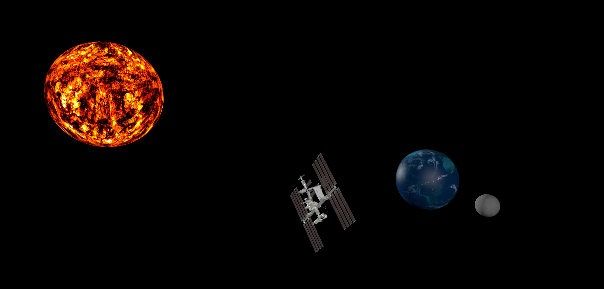

Memoria de la Sesión 2
Descripción de la práctica
En esta sesión se ha desarrollado un simulador del sistema solar utilizando Three.js. Se ha comenzado con una configuración básica y se han ido añadiendo capas de complejidad: texturizado de planetas, sistemas de partículas (nubes), órbitas sincronizadas, sombreadores (shaders) personalizados para el Sol e importación de modelos 3D externos (ISS).
Ejercicio 1 - Configuración Básica
Se estableció la escena inicial con un cubo rotando para verificar el funcionamiento del renderizador y la cámara.
Ejercicio 2 - La Tierra y Texturas
Se implementó la esfera terrestre aplicando una textura de mapa de bits y se ajustó el material para que reaccionara a la iluminación (MeshPhongMaterial).
Ejercicio 3 - Atmósfera
Se añadió una capa de nubes transparente sobre la Tierra.
Ejercicio 4 - Rotación sobre eje Z
Se rotó la Tierra sobre su eje Z 23 grados incluyendo globo terráqueo y atmósfera y realizar la rotación sobre el objeto para que afecte al mismo tiempo al globo y la atmósfera.
Ejercicio 5 - La Luna
Se introdujo la Luna respetando la escala relativa (0.27 veces el tamaño de la Tierra).
Ejercicio 6 - Animación de la Tierra
Implementación del ciclo día/noche mediante la rotación de la Tierra y sus nubes.
Ejercicio 7 - Animación de la Luna
Movimiento orbital de la Luna (período de 28 días) alrededor de la Tierra.
Ejercicio 8 - Shaders
Uso de ShaderMaterial para crear un efecto de lava dinámico en el Sol. Se utilizaron mapas de
ruido y distorsión para simular la superficie estelar.
Ejercicio 9 - Integración Final (ISS)
Carga de un modelo COLLADA de la Estación Espacial Internacional (ISS) mediante ColladaLoader.
El modelo se integra en primer plano con el sistema solar de fondo.
Ejercicio Extra - Orbita Solar Completa
En este ejercicio adicional, se ha modificado la jerarquía para que la Tierra (junto con la Luna y la ISS) realice una órbita completa alrededor del Sol, mientras conservan sus rotaciones y órbitas locales.
Captura Significativa
Vista general del sistema integrado con la ISS, el Sol y la Tierra.

Dificultades encontradas
- Gestión de rutas: El cargador de modelos COLLADA requería que las texturas estuvieran
en una carpeta relativa específica. Se solucionó ajustando la estructura de archivos en
models/. - Carga de texturas (Crate): La textura de la caja (Prac 2-2) no se cargaba correctamente
al inicio debido a rutas incorrectas, lo que se solucionó verificando el servidor de desarrollo y la
ruta
textures/crate.gif. - Visualización e iluminación del Sol: Inicialmente el Sol no se veía correctamente
debido al recorte (clipping) y a que carecía de una fuente de luz propia que afectara al resto de
astros. Se integró un
PointLighten su posición para dar coherencia al sistema. - Sincronización de órbitas: Lograr que la Luna rotara siempre enfrentando la misma cara a la Tierra requirió ajustes en los grupos de transformación (Object3D).
- Configuración de Shaders: La configuración de los
uniformsy elRepeatWrappingfue clave para que el efecto de lava fluyera sin cortes visibles.
Respuestas a las cuestiones
¿Cómo se simula la transparencia de las nubes? Mediante el uso de un material
MeshLambertMaterial con la propiedad transparent: true y un valor de
opacity adecuado (aprox 0.5).
¿Qué ventaja tiene usar Object3D para las órbitas? Permite crear jerarquías de transformación independientes, facilitando que la Luna orbite el centro de la Tierra sin que su rotación propia afecte a la trayectoria.